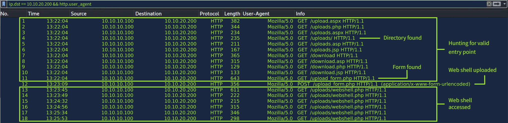
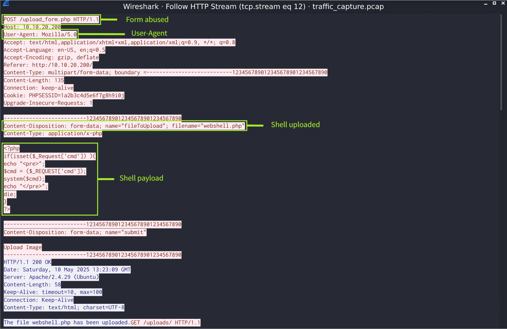

Anatomy of a Web Shell
Legitimate Function Abuse: Web shells rely on the abuse of legitimate functions within programs. System execution functions in PHP, such as shell_exec(), exec(), system(), and passthru(), can be abused to gain command execution.
Under the Hood:Here is a simple web shell written in PHP. Let's take a look at its functionality:
- Checks if the cmd parameter is present in the URL ?cmd=whoami
- Stores the user supplied command in the variable $cmd
- Executes the command using shell_exec()
- Displays the output
- HTML for the user interface
- Command to execute
- Output
A Web Shell in Action:A web shell has been deployed on our target machine at http://MACHINE_IP:8080/files/awebshell.php.
It can be accessed directly via browser or by command line, utilizing curl.
Don't forget to URL-encode your commands if accessing the shell via command line (/awebshell.php?cmd=
Example: ls -la becomes ls%20la
Esempio completo: curl http://10.80.142.211:8080/files/awebshell.php?cmd=cat%20flag.txt
Log-Based Detection
Web Server Logs
While the format of web server logs varies depending on the service, access logs generally follow a similar structure and include the following information.
The remote log name field is typically represented by a hyphen (-), as it is a legacy field that is rarely used today. However, it still appears in access logs for compatibility. Similarly, the authenticated user field is usually shown as a hyphen as well, unless the server required prior authentication, in which case it may contain the actual username.
Web Indicators
Unusual HTTP Methods & Request Patterns:
- Repeated GET requests in quick succession could mean an attacker is probing for a valid place to upload a shell
- POST requests to valid upload locations following repeated GET requests
- Repeated GET or POST requests to the same file could indicate web shell interaction
Request Methods To Be Aware Of
- GET > Retrieve a resource > Used for recon or interacting with a web shell
- POST > Submit data to the server > Upload or interact with a web shell
- PUT > Upload or replace a file on the server > Upload a web shell
- DELETE > Remove a resource from the server > Cleanup methods
- OPTIONS > Requests methods that are supported > Reconaissance
- HEAD > Similar to GET but only returns headers > To detect files
Note that each request shares the same client IP and user agent. Response codes and timestamps should also be noted. 200 OK , 404 Not Found

Suspicious User-Agents & IP Addresses
The User-Agent identifies the client making requests to the web server and provides information about the browser, device, and operating system.
- Altered User-Agents: Mozilla/4.0+(+Windows+NT+5.1) shortened to Mozilla/4.0
- Outdated User-Agents: Mozilla/4.0 (compatible; MSIE 6.0) MSIE 6.0 released in 2001
- Blacklisted User-Agents:
curl/1.XX.Xorwget/1.XX.Xfor example - Suspicious IP Addresses: A network normally only sees internal traffic so an outside IP address would be suspicious
Query Strings
Part of the URL that associates values with a parameter. example.php?query=somequery
- Abnormally long or suspicious query strings, especially containing keywords like cmd= or exec=
- Encoded query strings.
?query=whoamibecomes?query=d2hvYW1pwhen Base64 encoded. Cyberchef is an excellent tool for decoding Base64 and many other forms of encoding and obfuscation.
Missing Referrer
The referrer shows the URL the users visited before being linked to the current page.
- A missing referrer can be potentially indicative of web shell activity
- There are valid reasons why a referrer might be missing (e.g., browsers blocking them for privacy, if a URL is directly accessed)
Sample suspicious web request including some of the above indicators.
- Known malicious or untrusted IP address.
- Abnormal timestamp. Perhaps outside of normal business hours.
- POST request with a search query string to a malicious file.
- No referrer. So this page was accessed directly. (not always a valid indicator)
- A suspicious User-Agent string that is not typically associated with a web browser.
Auditd
A native Linux utility that tracks and records events, creating an audit trail. Rules can be created for auditd, which determine what is logged in the audit.log. Rules can be highly configured to match specific conditions, such as when certain programs are run or files are modified in a particular directory. In the example below, ausearch is used to search for any logs matching the web_shell rule.
ausearch -k web_shell
time->Wed Jul 23 06:20:36 2025 // A log matching the web_shell rule
"name = /uploads/webshell.php"
"OGID = www-data"
Web & Auditd Correlation
Detecting web shells effectively requires correlating multiple log sources. Combining web access and error logs with auditd provides more insight and can confirm if a file was created, modified, or executed, and by which user or process. A suspicious POST request in web logs can be linked to an audit event that includes a creat or execve syscall, showing a script wrote a file or ran commands. Combining this information helps us build a clearer picture of the attack sequence.
Leverage SIEM Platforms
Some benefits of Security Information and Event Management (SIEM) platforms include:
- Centralized log collection and correlation, which is especially useful when dealing with many different log types.
- Targeted queries can be created to uncover signs of malicious activity, including web shells.
- Allows analysts to search and analyze logs more efficiently.
Beyond Logs
File System Analysis
An attacker's web shell must be stored somewhere. Analyzing web server files is crucial in identifying uploaded web shells or locating files modified to include a web shell payload. It should be noted that some platforms like WordPress and Django store page content in a database rather than a file system, so malicious code may be injected into posts, themes, or settings and won't appear in normal file system searches.
Here are some common web server directories where web shells are typically placed:
- Apache: /var/www/html/ Default on most Linux distros
- Nginx: /usr/share/nginx/html/ Default on many Linux setups
- Even if a custom root path is configured, attackers can guess or scan for common upload directories, like /uploads/, /images/, or /admin/
- Temporary directories like /tmp can also be abused if file permissions are not configured securely.
Suspicious or Random File Names
Can be used by attackers to evade detection. Be on the lookout for names that deviate from standard application files.
- Monitor files with executable extensions like .php & .jsp
- Be on the lookout for double extensions to disguise malicious files image.jpg.php
Helpful Commands
You can use find to search for recently modified scripts. In the example below, it is used to search the /var/www directory for .php files modified between two specific dates using the -newerct option. Another helpful tool, grep, can be used to track down suspicious functions like eval( within files. In the example below, we use it to search the WordPress directory wp-content.
Esempio:
user@tryhackme$ find /var/www -type f -name "*.php" -newerct "2025-07-01" ! -newerct "2025-08-01"
/var/www/html/uploads/awebshell.php // Web shell created between the dates above.
Esempio:
user@tryhackme$ grep -r "eval(" wp-content
/wp-content/uploads/awebshell2.php :eval(b64_dd($['cmd'])); // Web shell containing eval(
Network Traffic Analysis
Network traffic analysis allows analysts to go beyond logs by examining the data exchanged between a client and a server. By inspecting packet payloads, it becomes possible to observe attacker behavior on a more detailed level.
Many of the indicators that analysts need to be on the lookout for in log analysis can be applied to network traffic analysis as well.
- Unusual HTTP Methods & Request Patterns
- Suspicious User-Agents & IP Addresses
- Encoded Payloads
- Malicious Code or Commands in Request Bodies
- Unexpected Protocols or Ports
- Unexpected Resource Usage
- Web Server Processes Spawning Command Line Tools
Some useful Wireshark http filters:
http.request.method == “METHOD”Hunting for repeated or unusual requests can be usefulhttp.request.uri contains “.php”Can be helpful in finding suspicious or modified fileshttp.user_agentUsed to locate unusual or outdated User-Agents

